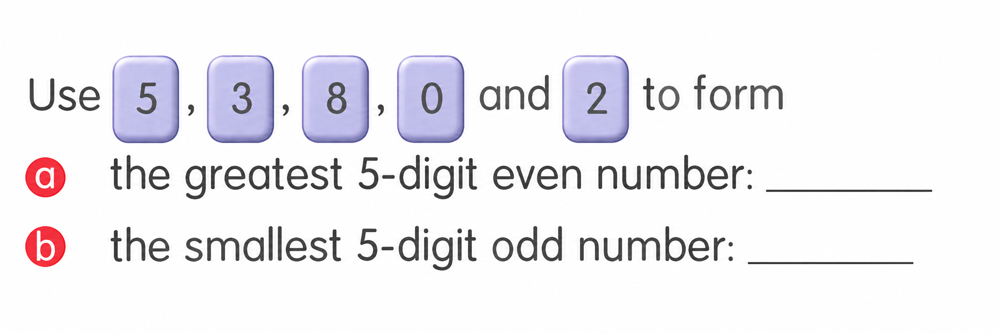
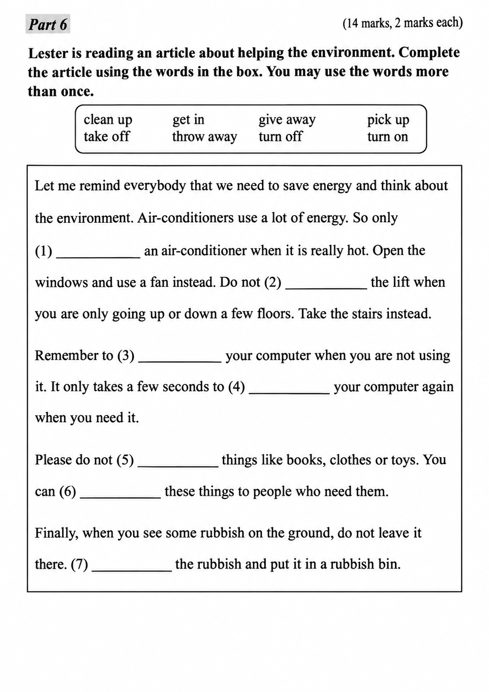
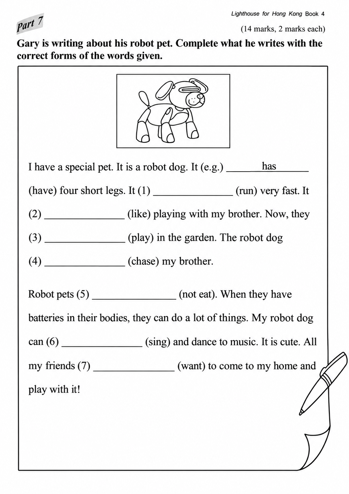

已掌握
| # | 中文意思 | 例句/提示 | 英文默写 | 已掌握 |
|---|---|---|---|---|
| noun 名词 | ||||
| 1 | 父母 | My love me. | ||
| 2 | 礼物 | I got a from my mother. | ||
| 3 | 朋友 | My is kind. | ||
| 4 | 尾巴 | The dog wags its . | ||
| 5 | 音乐剧 | We watched a at school. | ||
| 6 | 花 | This is red. | ||
| 7 | 小学生 | The reads a book. | ||
| 8 | 艺术 | We learn to draw in class. | ||
| verb 动词 | ||||
| 9 | 参观；访问 | I the museum with my class. | ||
| 10 | 醒来 | I at seven every morning. | ||
| 11 | 绘画 | I a picture. | ||
| phrase 短语 | ||||
| 12 | 在……和……之间 | The park is the bank the school. | ||
| 13 | 小学 | My sister goes to . | ||
| noun phrase 名词短语 | ||||
| 14 | 地铁站 | The is near my home. | ||
| adjective 形容词 | ||||
| 15 | 忙碌的 | Mum is cooking dinner. | ||
| 16 | 正确 | This answer is . | ||
| 17 | 聪明 | The child solves the problem. | ||
| modal verb 情态动词 | ||||
| 18 | 禁止；不准 | You run in the classroom. | ||
| conjunction 连词 | ||||
| 19 | 因为 | I stay home it is raining. | ||
| proper noun 专有名词 | ||||
| 20 | 英语 | We speak in class. | ||
| # | 单词/词组 | 中文意思 | 例句/说明 | 已掌握 |
|---|---|---|---|---|
| adjective 形容词 | ||||
| 1 | true | The sentence is true. | ||
| noun 名词 | ||||
| 2 | boxing | Boxing is a sport. | ||
| 3 | bus | I go to school by bus. | ||
| 4 | content | This book has interesting content. | ||
| 5 | clown | The clown made us laugh. | ||
| 6 | snowball | I made a snowball with fresh snow. | ||
| 7 | venue | The venue is near our school. | ||
| 8 | badminton | I play badminton with my friend. | ||
| 9 | fable | The fable has a lesson. | ||
| 10 | structure | We are learning about sentence structure. | ||
| 11 | farming | Farming provides us with food. | ||
| 12 | stone | I found a smooth stone by the river. | ||
| 13 | chopsticks | We eat noodles with chopsticks. | ||
| 14 | minibus | He goes to work by minibus. | ||
| 15 | rubbish | We go to the beach and pick up the rubbish. | ||
| 16 | hole | There is a hole in the bottom of the basket. | ||
| noun phrase 名词短语 | ||||
| 17 | convenience store | I buy water at the convenience store. | ||
| 18 | board game | We play a board game after school. | ||
| 19 | Exam Week | Exam Week is from 17th April to 21st April. | ||
| 20 | perfect time | Spring is the perfect time to visit the garden. | ||
| verb 动词 | ||||
| 21 | pack | Eric packs the basket but there is a hole in the bottom! | ||
| 22 | celebrate | We celebrate my birthday. | ||
| 23 | locate | We can locate the place on the map. | ||
| 24 | collect | I collect stamps. | ||
| 25 | refuse | I refuse to tell a lie. | ||
| 26 | solve | We can solve this problem together. | ||
| verb phrase 动词短语 | ||||
| 27 | cheer sb. up | I tell Tom a joke to cheer him up. | ||
| 28 | play the recorder | We play the recorder in Music class. | ||
| 29 | waste food | I don't want to waste food anymore. | ||
| 30 | throw away | We do not throw away things like clothes, books or toys. | ||
| # | 中文意思 | 例句/提示 | 英文默写 | 已掌握 |
|---|---|---|---|---|
| time/date 时间日期 | ||||
| 1 | 一月 | is the first month. | ||
| 2 | 二月 | is the second month. | ||
| 3 | 六月 | is the sixth month. | ||
| 4 | 星期四 | is a weekday. | ||
| 5 | 星期五 | is a weekday. | ||
| 6 | 星期六 | is a weekend day. | ||
| time unit 时间单位 | ||||
| 7 | 年 | A has 12 months. | ||
| numbers 数字 | ||||
| 8 | 7 | is 7. | ||
| 9 | 40 | is 40. | ||
| 10 | 90 | is 90. | ||
| ordinal numbers 序数 | ||||
| 11 | 第一 | This is the shape. | ||
| solid shape 立体图形 | ||||
| 12 | 三棱锥 | A has triangular faces. | ||
| 13 | 圆锥 | A has one curved face. | ||
| 14 | 侧面 | A is on the side. | ||
| plane shape 平面图形 | ||||
| 15 | 三角形 | A has three sides. | ||
| # | 单词/词组 | 中文意思 | 例句/说明 | 已掌握 |
|---|---|---|---|---|
| operations 运算 | ||||
| 1 | carrying | Carrying helps when the ones make ten. | ||
| geometry 几何 | ||||
| 2 | right angle | A right angle is 90 degrees. | ||
| 3 | acute angle | An acute angle is smaller than a right angle. | ||
| 4 | grid | A grid helps us find positions. | ||
| question word 题目词 | ||||
| 5 | compare | We compare two numbers. | ||
| shape 形状 | ||||
| 6 | circle | Draw a circle around the answer. | ||
| comparison 比较 | ||||
| 7 | more | 8 is more than 5. | ||
| 8 | shortest | Find the shortest line. | ||
| 9 | lightest | The 1 kg bag is the lightest of the 1 kg, 2 kg and 3 kg bags. | ||
| 10 | heaviest | The 3 kg bag is the heaviest of the 1 kg, 2 kg and 3 kg bags. | ||
| quantity 数量 | ||||
| 11 | pair | A pair means two things together. | ||
| position 位置 | ||||
| 12 | front | The door is at the front of the room. | ||
| operations calculation 运算 | ||||
| 13 | difference | The difference is the answer in subtraction. | ||
| 14 | multiplication | In multiplication, 3 times 4 equals 12. | ||
| 15 | equally | Share the apples equally. | ||
| 16 | divide A by B | Divide A by B. | ||
| teacher math vocabulary 老师数学词汇 | ||||
| 17 | start | Start counting from ten. | ||
| currency money 货币 | ||||
| 18 | pay for | I pay for the book. | ||
| 19 | expensive | This toy costs $50. It is more expensive than the $20 toy. | ||
| measurement 测量 | ||||
| 20 | metre | A metre is 100 centimetres. | ||
| 21 | kilometer | One kilometer is 1,000 meters. | ||
| 22 | balance | We use a balance to compare the weights of two objects. | ||
| data charts 统计图 | ||||
| 23 | block chart | Read the block chart. | ||
| geometry tool 几何工具 | ||||
| 24 | geo-strip | A geo-strip can help make shapes. | ||
| 句型结构 | ||||
| 25 | Angle ... is the largest. | Angle A is the largest. | ||
| 26 | The lines are perpendicular to each other. | The lines are perpendicular to each other. | ||
| 27 | ... is to the west of ... | The bank is to the west of the school. | ||
| plane shape 平面图形 | ||||
| 28 | upper base | The upper base of this trapezium is 4 cm long. | ||
| 29 | leg | A leg of a trapezium is a non-parallel side. | ||
| 30 | isosceles trapezium | An isosceles trapezium has two equal legs. | ||


